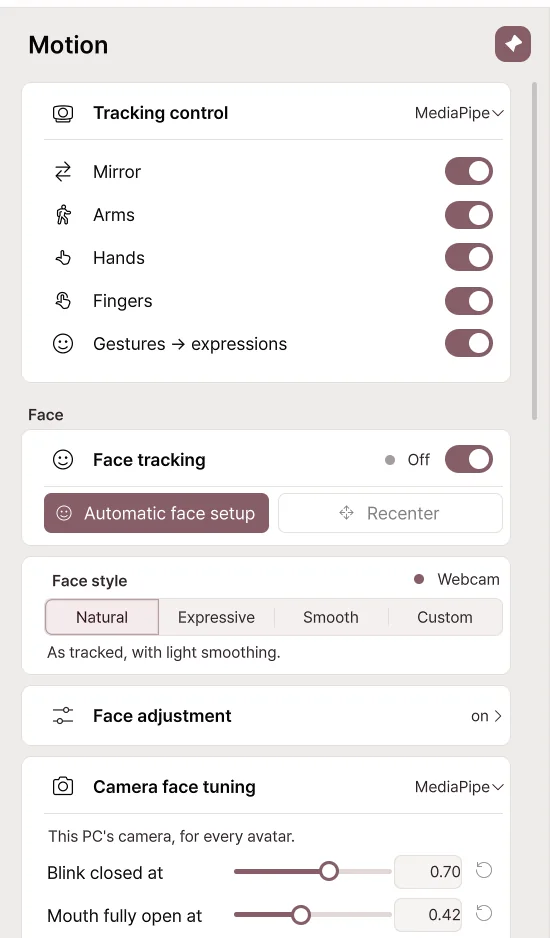
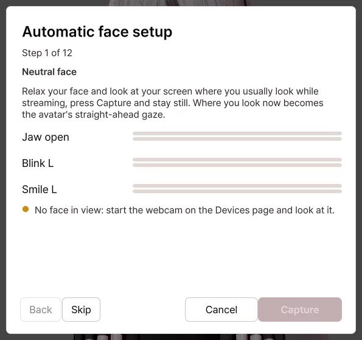
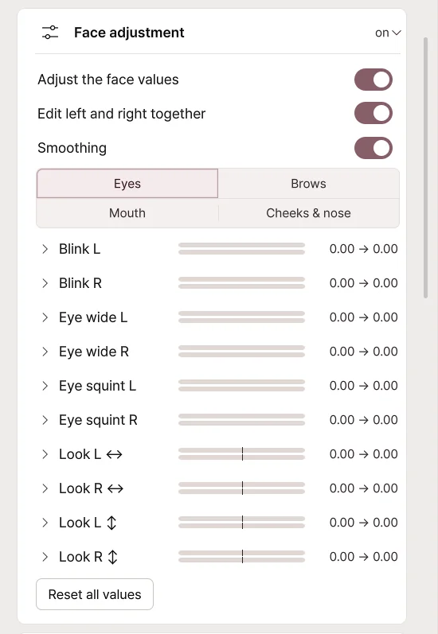
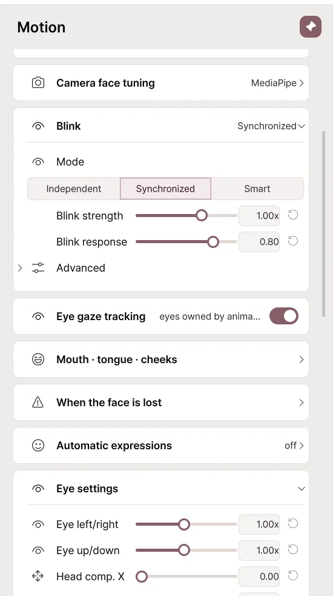
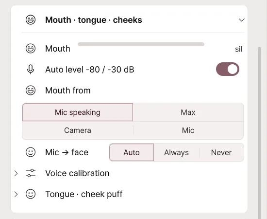
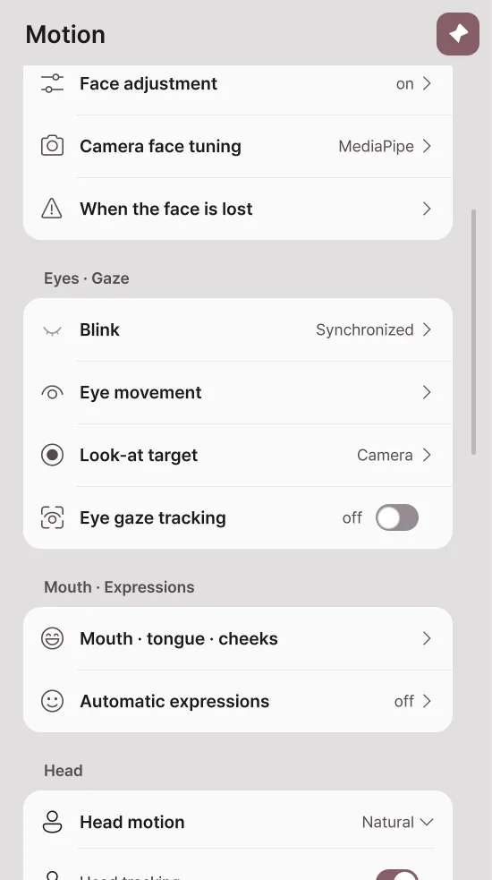
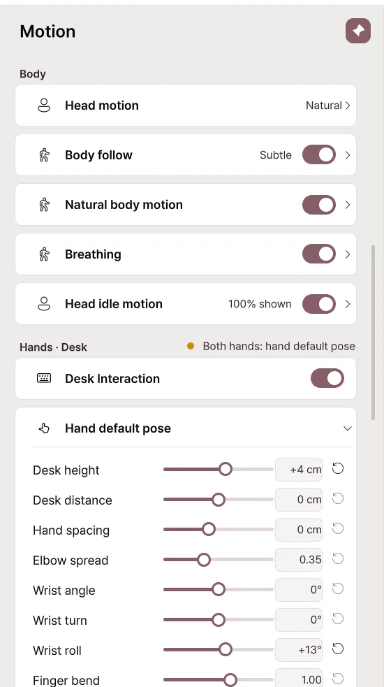

Action
It determines how much and how smoothly my facial expressions and movements are reflected in the avatar. The settings are saved for each avatar.
Face

| Item | If adjusted |
|---|---|
| Face Tracking | When turned on, it reflects my facial expressions. When turned off, facial input is not used. |
| Mirror | Reflects left and right movement like a mirror. |
| Gesture → Facial Expression | Uses avatar expressions linked to hand shapes. |
| Expression Sensitivity | Increasing it makes even small expressions look bigger, lowering it makes them look calmer. |
| Softness | Increasing it reduces vibration, and lowering it makes it respond faster. |
Automatic Face Settings

- Press Automatic Face Setup.
- Follow the instructions to look straight ahead or make a facial expression.
- Press Measure and proceed to the next step.
- Finally, press Apply.
Face Adjustment

- Eyes, eyebrows, mouth, cheeks: Adjust the movement size of each expression separately.
- Edit left and right together: If turned on, it changes both sides to the same value.
- Smoothing: Reduces small facial tremors. If set too high, the response is slow.
Eyes and Gaze

| Item | Result |
|---|---|
| Separate Blinking | Closes the left and right eyes separately. Used for winking. |
| Blink Synchronization | Close both eyes together. |
| Automatic Blinking | Blinks at a regular interval even without input. |
| Eye Gaze Tracking | Reflects the direction of my eyeballs. |
| Camera view | Make the avatar's pupils face the camera. |
| Look-at target | Choose the object to look at, such as a camera or a specific avatar. |
Head tracking and facial tracking, as well as camera view, are set separately. Even in a fixed head pose, you can make only the eyes look at the camera.
Mouth and Lip Sync

- Lip-sync intensity: Increasing it opens the mouth wider.
- Auto Level: Adjusts mouth movements to match the volume of the voice.
- Voice correction: Pronounce the guided vowels to match your voice.
- Tongue and cheek puffing: Apply the expression using a button or shortcut key. It will be visible only if the model has the required expression.
Body

| Item | If adjusted |
|---|---|
| Head Movement | Choose the size of movement: small, natural, or large. |
| Follow Body | The body turns along when the head turns. |
| Natural Movement | Even when still, small idle movements are added. |
| Breathing | Small body movements as if breathing are added. |
| Upper Body/Full Body | Reflects the body movements received from the device. |
When Tracking is Lost

AFK is the idle state used when both face and body tracking are lost. The time is set in Menu → Default·AFK Pose.
| Time | Effect of Longer Setting |
|---|---|
| Waiting Time | Maintains the pose even if input briefly stops and waits longer. |
| Transition Time | Slowly transitions to the idle pose. |
| Return Time | Slowly returns to normal operation after input resumes. |
The pose and expression to use while idle are selected in Default Pose and Idle Pose.
Arms and Hands

| Item | Effect When Adjusted |
|---|---|
| Arm/Hand Smoothness | Increasing it reduces shaking, and fast hand gestures follow more slowly. |
| Dynamic Method | Uses an arm method that reflects changes in reaching distance. |
| Previous Method | Can be compared with the existing arm movement method. |
| Hand Depth Estimation | Estimates forward and backward distance with a webcam. Experimental, turn off if the arm twists. |
| Hand Release Return | Changes the speed at which the hands return to the default pose when not visible. |
Desk Movements
When the hands are not visible to the camera, the avatar hands move according to keyboard and mouse use.
- Default Hand Pose: Adjust the desk height, hand spacing, and wrist angle.
- Keyboard Response: The movement size of fingers and hands when typing.
- Mouse Response: The size of hand movement following the mouse.
- When the hands are back in view of the camera, it returns to tracking.
Keyboard input is only used to create hand movements; typed characters are not saved or transmitted.
When Expressions Don't Appear
You can only move the expressions that exist on the avatar. If there is a VRCFaceTracking setting, that setting will be used, and if there are ARKit shape keys, those facial shapes will be used. Expressions that do not exist will not be created even if sensitivity is increased.